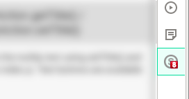

If you want to open or hide sidebar from some action from the web content,
you can call show() and hide() method using content scripts and background scripts.
Refer to contentscript.js and backgorund.js.
Test buttons are injected to all website to test this feature.
You can update or retrieve the badge text or badge background color using
setBadgeText(), getBadgeText(), setBadgeBackgroundColor(), getBadgeBackgroundColor() method.
Refer to index.js. Test buttons are available below:

sidebarAction.onClicked
sidebarAction.onClicked.addListener() is used to listen to the extension icon click events.
The result callback passes the window id and boolean flag whether the sidebar is opened or closed.
Refer to index.js. Event log: